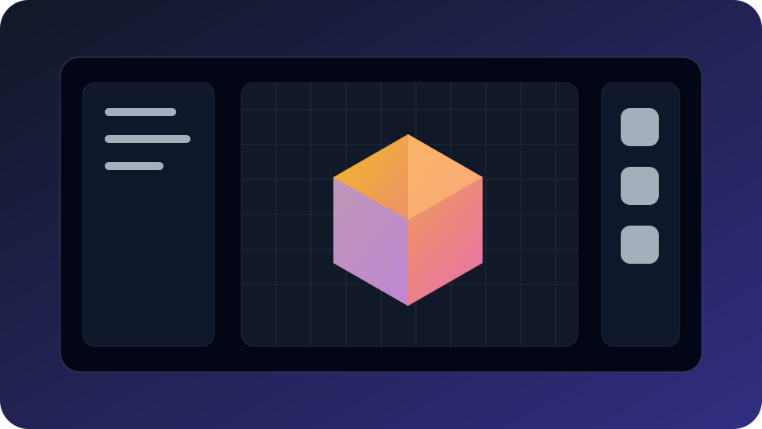

← Retour aux projets
Moteur et éditeur 2D/3D · Finalisé
Ludani
Moteur et éditeur de jeux vidéo en 2D et 3D permettant de concevoir ses propres jeux à l’aide d’outils graphiques.

Moteur et éditeur 2D/3D · Finalisé
Moteur et éditeur de jeux vidéo en 2D et 3D permettant de concevoir ses propres jeux à l’aide d’outils graphiques.

Problème
Explorer les contraintes d’un moteur graphique : rendu temps réel, ressources, éditeur, logique client et architecture évolutive.
Fonctionnalités
Preuve de compétence
Suite
Les autres études de cas permettent de comparer backend web, application métier, desktop, IA locale et rendu graphique.